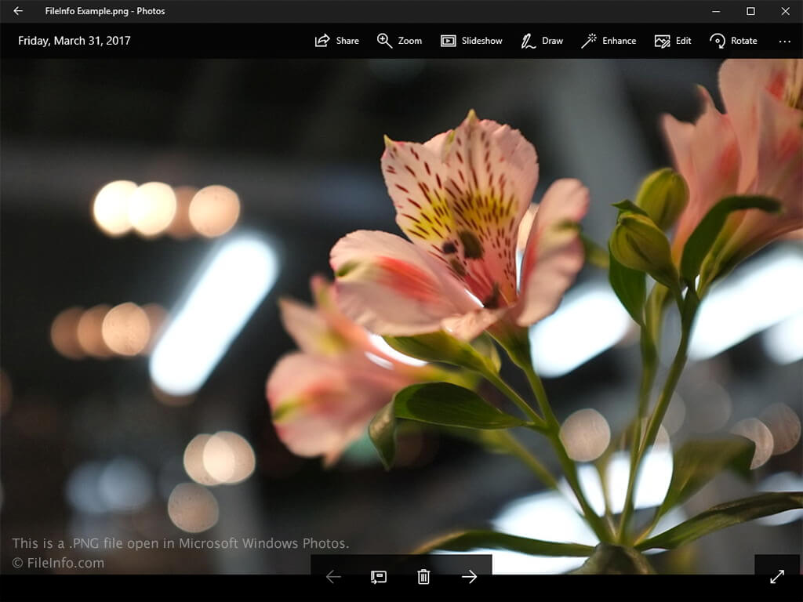

How to Create an Alarm¶
Remember
Test1 Test2 warning
Use the following command to check whether pip is installed: 1. Go to XCS portal 2. This is for Tst 3. Thats great 4. Complete it today

Example1¶
pip is already installed if you are using Python 2 >=2.7.9 or Python 3 >=3.4 downloaded from python.org or
if you are working in a Virtual Environment created by virtualenv or venv. Just make sure to upgrade pip.